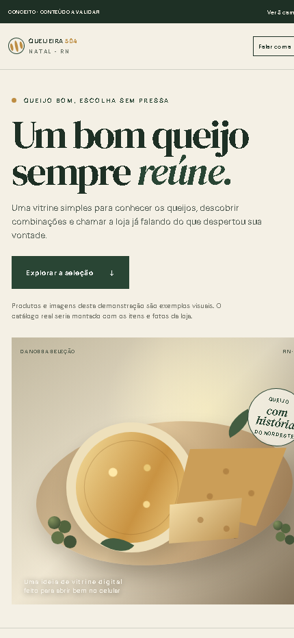
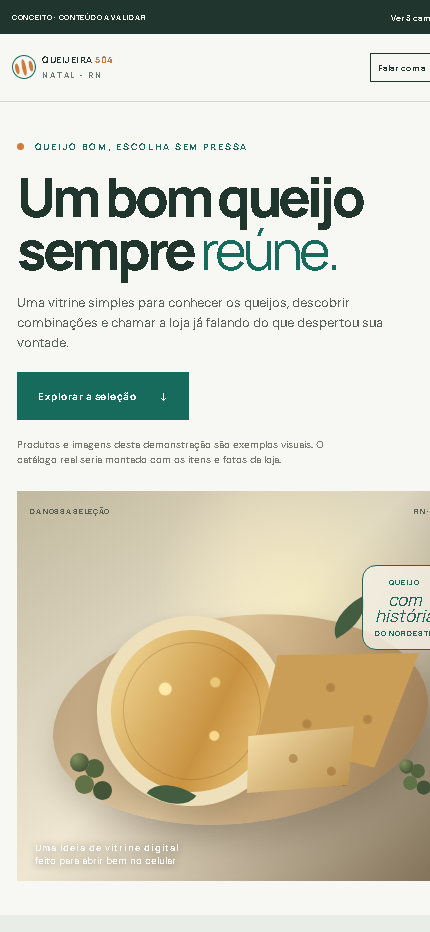
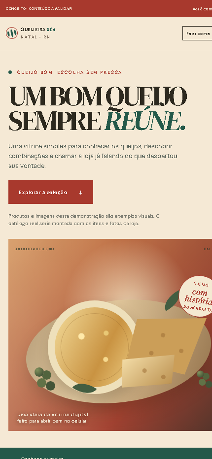

01 · ORIGEMEditorial e acolhedora

A história abre o apetite.
UMA VITRINE PRÓPRIA, COMPLEMENTAR AO WHATSAPP
Três caminhos para apresentar produtos com clareza — e dar à loja mais autonomia para manter o catálogo atualizado.

A história abre o apetite.

A informação vem primeiro.

Uma marca que chama atenção.
UMA IDEIA PARA A DOR QUE VOCÊS CONTARAM
Uma área privada, com acesso só para você, poderia permitir adicionar, editar ou retirar produtos sem depender do catálogo da Meta.